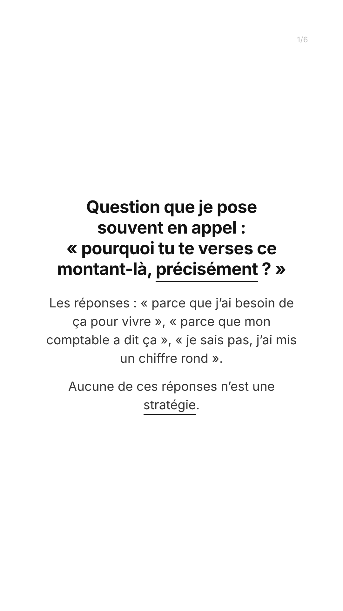
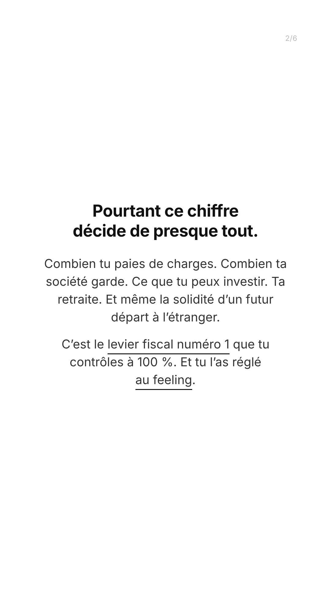
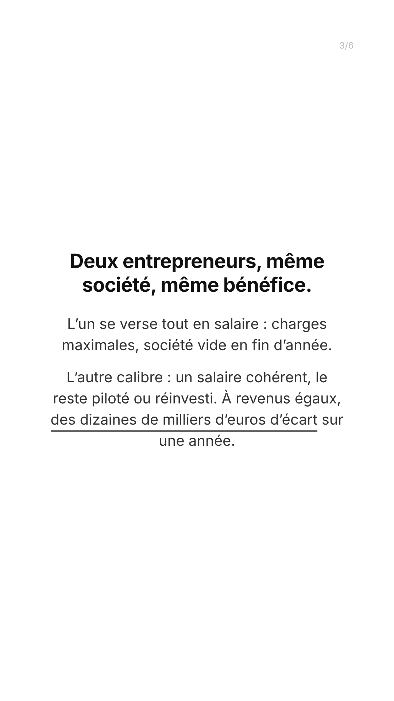
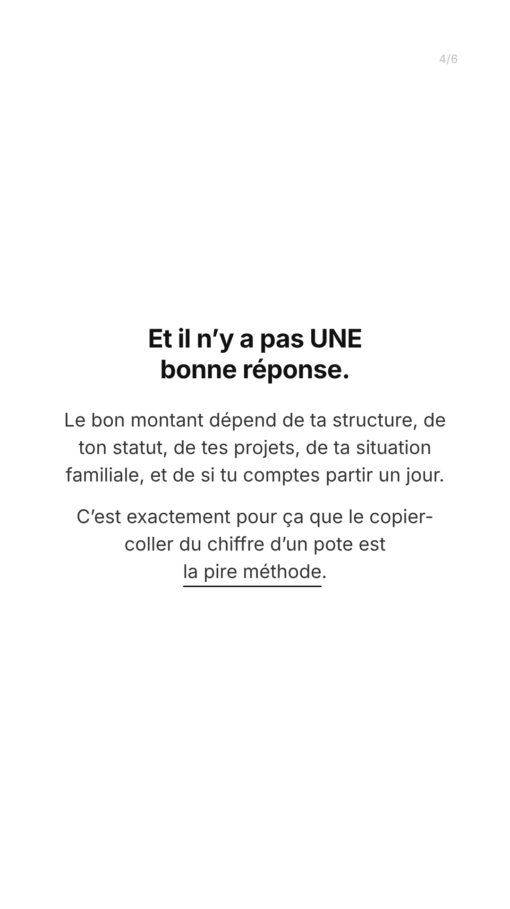
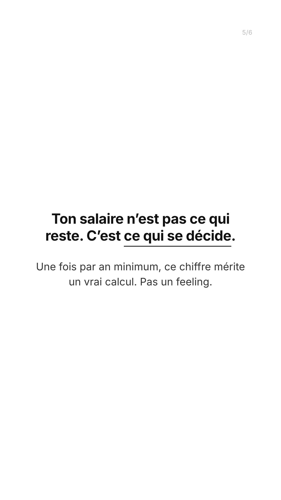
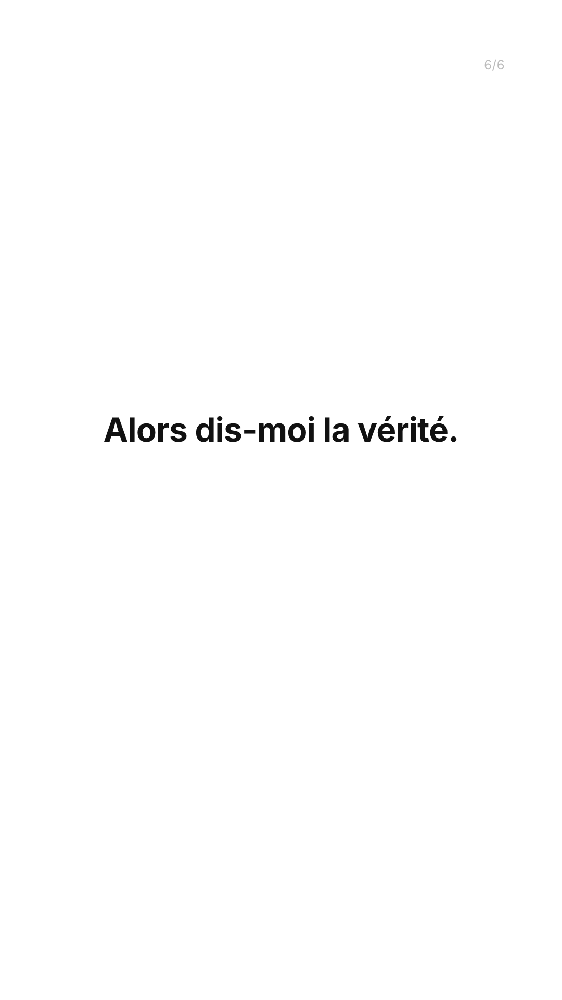

Les 6 stories dans l'ordre de publication. Le filet gris marque l'axe médian des 960 px, sur lequel le bloc est centré ; le filet rouge, la limite basse — 1620 px partout, 900 px sur la story 6 dont le bloc est remonté pour dégager la moitié basse au sticker sondage.





